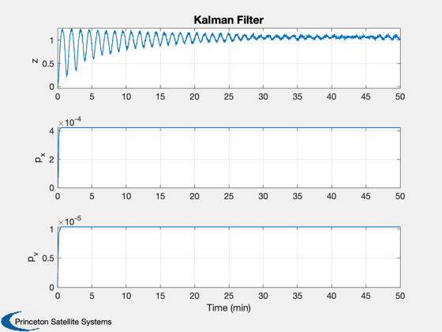

Contents
Discrete time Kalman filter for a nonlinear spring.
Loads the file KFSim.mat, generated by NLSpringSim.
------------------------------------------------------------------------ See also: C2DZOH, TimeLabl, Plot2D ------------------------------------------------------------------------
%-------------------------------------------------------------------------- % Copyright (c) 2020 Princeton Satellite Systems, Inc. % All rights reserved. %-------------------------------------------------------------------------- % Since 2020.1 %--------------------------------------------------------------------------
Set up the filter
s = load('KFSim'); n = s.n; % Number of steps r = s.noiseMeas^2; % Measurement noise q = s.noiseForce^2; % Plant noise h = [1/s.w 0]; % Measurement matrix a = [0 1;-s.d.kL/s.d.m -s.d.c/s.d.m]; % State transition matrix b = [0; 1/s.d.m]; % Input matrix % Discretize [phi,gamma] = C2DZOH(a,b,s.dT); xE = [0;0]; % Estimated state u = s.d.f; % Input p = [0 0;0 0]; % Initial covariance xP = zeros(7,n); e = eye(2);
Run the Kalman Filter
for j = 1:n % Measurement z = s.xP(3,j); % Store variables to plot xP(:,j) = [z;diag(p);s.xP(1:2,j);xE]; % Kalman Filter measurement update k = p*h'/(h*p*h' + r); xE = xE + k*(z - h*xE); p = (e - k*h)*p; % Kalman Filter state update xE = phi*xE + gamma*u; p = phi*p*phi' + gamma'*q*gamma; end
Plot
yL = {'z' 'p_x' 'p_v' 'x' 'v' };
lL = {{'Truth','Estimate'} {'Truth','Estimate'}};
[t,tL] = TimeLabl(0:(n-1)*s.dT);
Plot2D(t,xP(1:3,:),tL,yL(1:3),'Kalman Filter');
Plot2D(t,xP(4:7,:),tL,yL(4:5),'Kalman Filter',...
'lin',{'[1 3]' '[2 4]'},[],[],[],[],lL);
%--------------------------------------
% $Date$
% $Id: c299f0c345ea40349d534f60b9d724dd9c1ba01d $
